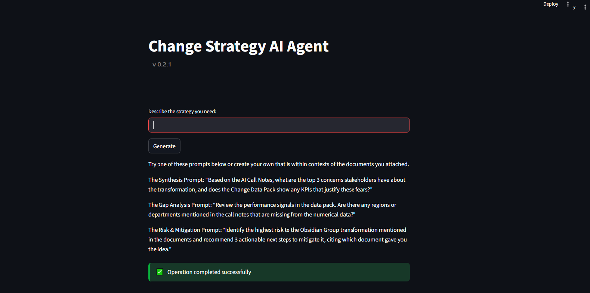

Nexura deploys agentic workflows that streamline Finance, HR, and operational processes across enterprise platforms including SAP, Oracle, and Workday.
Our solutions combine automation, AI agents, LLMs, and data orchestration to modernise outdated workflows and reduce operational overhead. From enterprise systems and software to web platforms, mobile applications, and scalable data infrastructure, we build robust solutions engineered for long-term growth.
We work across industries, helping organisations adopt intelligent systems tailored to their operational challenges and digital transformation goals.
AI agents reconcile POs, receipts, and invoices with 99.9% accuracy.
Scraping data for development and research purposes.
Automatic error flagging for Invoices and POs
We were approached to develop a Change Strategy tool which automates change startegy and recommendations. The problem was simple: Post a company Change meeting Change strategies can be tiresome, contain errors, and clashing of ideas between stakeholders.
The client wanted to improve this process and be in a position where Cange meetings are more streamlined and strategys are easier to produce and with less errors.
The solution? A system that can be fed Change documents , structured and unstructured, ran an Agentic workflow and OpenSource LLM model to understand the company and change context. Then it will produce a Change Strategy presentation which is passed to all key stakeholders. The client saw a 40% jump in efficiency and change participation.
This system was built with Python, Ollama LLM model, LangSmith, and other Python libraries. The front end is a Streammlit UI.

When it comes to our methodology we don't simply knock out full systems in a day and hand it over. We understand that to create the best solutions we need solid methodology that's been tried and tested, methodologies which have been System and Software development Standards way before the age of AI.
We have a HUGE passion for computing, web, mobile and desktop technologies so buidl for passion, for clients and for our own hobbies. It's the life cycle of tech. So when it comes to desiging and building we keep an eye on new tech and the old tech too. We can take old tech and combine it with new, modernise old tech or just use only new tech. The only thng that matters i quality solutions and output and putting our loyal clients and custmers first.
Some of things we build and enjoy doing it include but not limited to:
Most but not all of our tech stacks are based around: